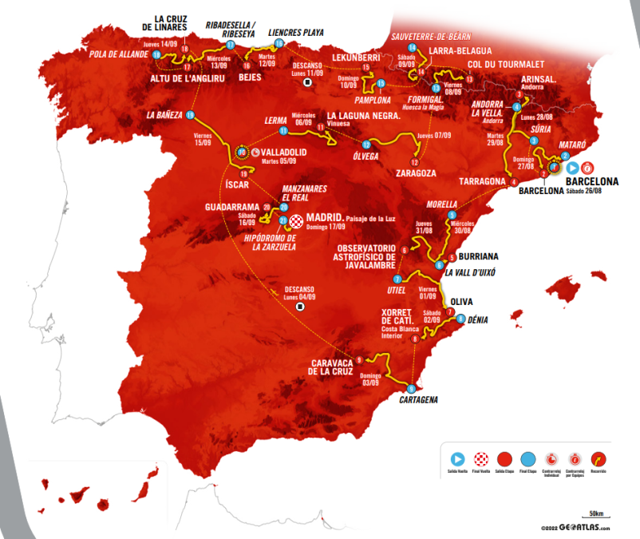

Lorenzo Milesi Lidera al DSM en Barcelona en la Primera Etapa de La Vuelta 2023
Publicado el 29 de octubre de 2023

El equipo DSM-firmenich ha triunfado en la emocionante primera etapa de La Vuelta 23, una contrarreloj por equipos de 14,8 kilómetros en Barcelona. A pesar de una fuerte competencia, el equipo DSM-firmenich se impuso, y Enric Mas liderando a Movistar Team quedó a solo 52 centésimas de la victoria. El joven italiano Lorenzo Milesi, actual campeón mundial de contrarreloj sub23, se ha convertido en el primer líder de la carrera después de una contrarreloj bajo la lluvia que ha marcado las primeras diferencias entre los aspirantes a la clasificación general.
Un Comienzo Espectacular
La edición 2023 de La Vuelta arrancó con un emocionante escenario en la ciudad de Barcelona, que exhibió algunos de sus lugares más icónicos en el recorrido urbano de la primera etapa. El equipo neerlandés Team DSM-firmenich sorprendió al llevarse la victoria en una competencia reñida y ajustada, que catapultó a uno de los ciclistas más jóvenes de la carrera al liderato. Lorenzo Milesi, de tan solo 21 años, es el actual campeón mundial sub23 de contrarreloj y ha demostrado su destreza.
Condiciones Climáticas Desafiantes
La lluvia hizo su presencia durante la contrarreloj, lo que complicó el desempeño de varios equipos favoritos. El equipo DSM-firmenich, liderado por Lorenzo Milesi, completó el recorrido en un impresionante tiempo de 17 minutos y 30 segundos, dejando claro que sería difícil superarlos. Algunos de los equipos más destacados, como el EF Education-EasyPost a cinco segundos del DSM, lucharon por alcanzar el mejor tiempo, mientras otros, como el Ineos Grenadiers de Geraint Thomas (a 20 segundos), el Jumbo-Visma de Primoz Roglic y Jonas Vingegaard (a 32 segundos), y el UAE Team Emirates de Juan Ayuso (a 37 segundos), quedaron rezagados.
Movistar al Borde de la Victoria
Movistar Team mantuvo la tensión al liderar en el punto intermedio de la contrarreloj, pero finalmente quedó a solo 52 centésimas de la victoria en la etapa. En tercer lugar se situó el equipo EF Education-EasyPost, empatado en tiempo con el Soudal Quick-Step de Remco Evenepoel, el defensor del título. Tanto Enric Mas como Evenepoel se encuentran entre los favoritos que se benefician al tomar ventaja sobre sus rivales en esta jornada.
Próxima Etapa en Mataró a Barcelona
La Vuelta 23 continuará mañana con la segunda etapa, que se desarrollará en un recorrido de 181,8 kilómetros entre Mataró y Barcelona. Esta etapa incluye tres puertos puntuables en el camino, entre ellos el alto del Castell de Montjuïc, que se presume será decisivo en la resolución de la etapa.
Este artículo fue generado por una IA y puede contener datos no precisos.